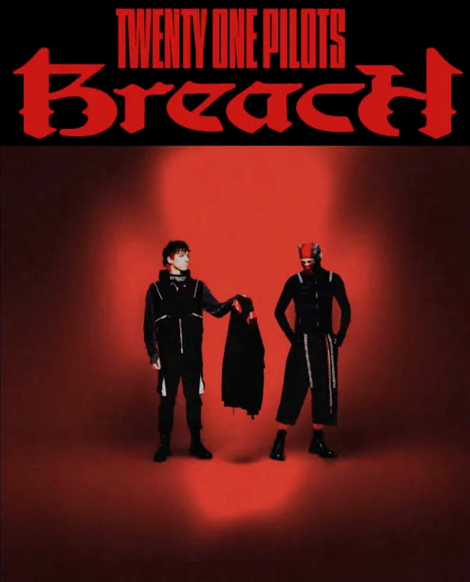

"City Walls no es un videoclip cualquiera. Con una duración de casi diez minutos viene a poner el cierre
a todo el lore de Dema, la narrativa que el grupo ha venido desarrollando en sus últimos trabajos y que
tiene su conclusión en Breach, el quinto álbum del grupo que lanzaban una hora antes que el videoclip."
- Cristina Zavala, periodista